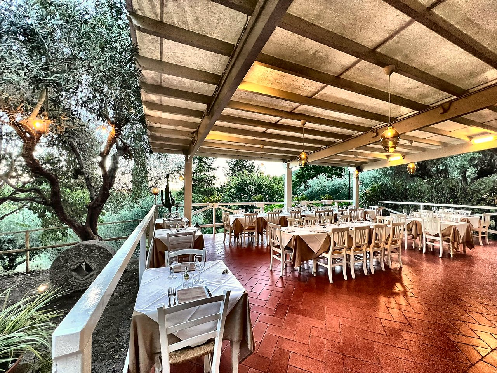
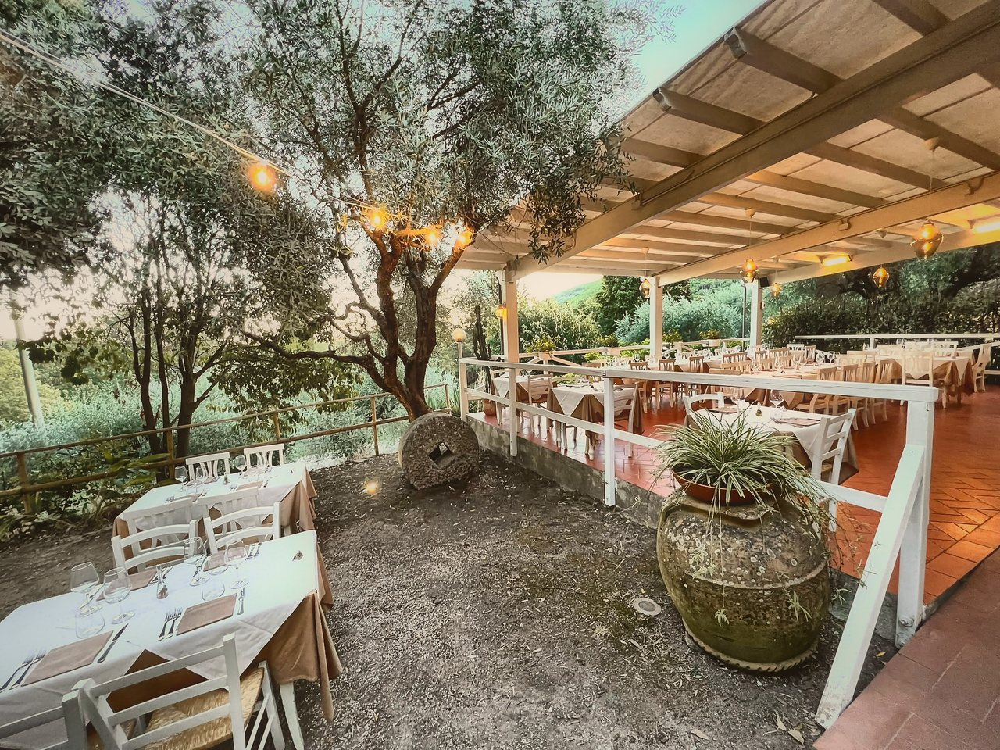
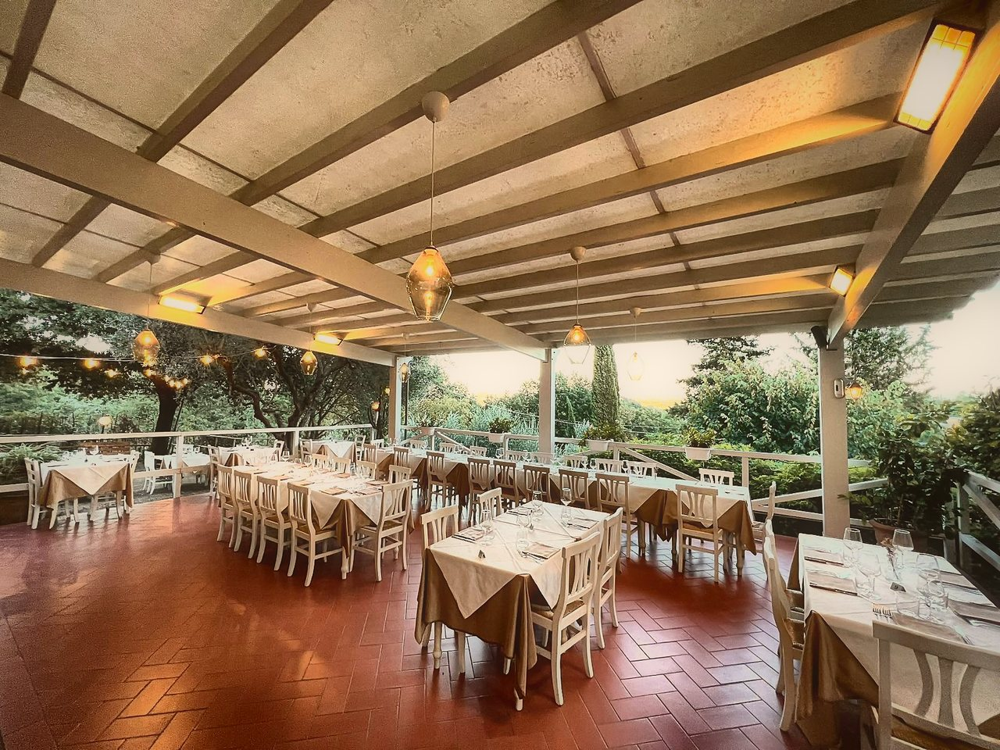
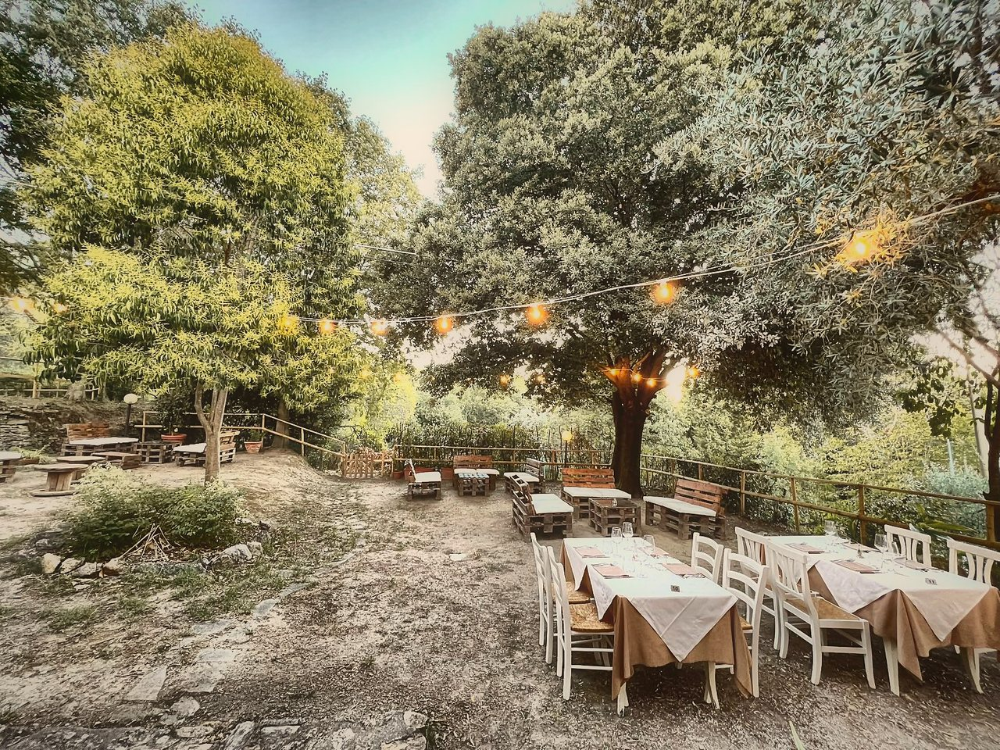
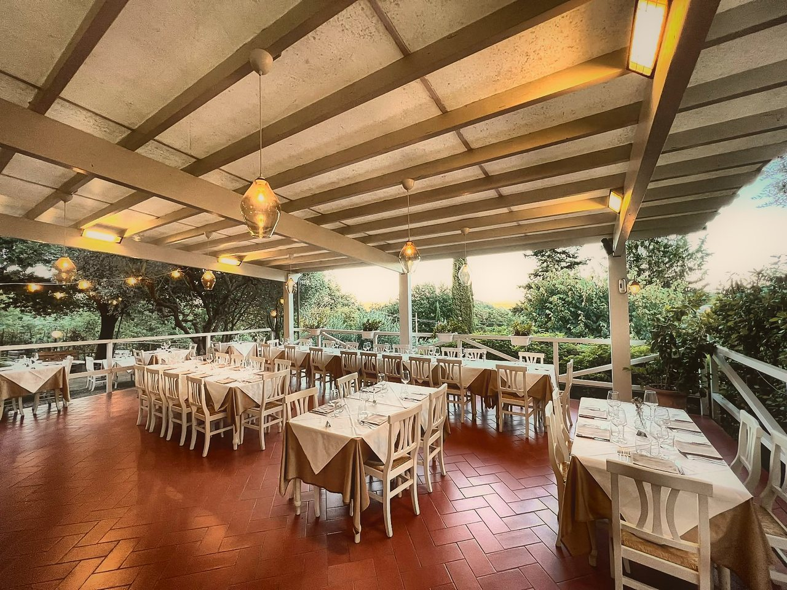

Menù
Terra · Mare

Località Luchetta · Vicopisano · Toscana
Pasta fresca fatta a mano, carne e pesce di stagione. Sotto gli ulivi, fino alle 23.
Dalla nostra cucina
01/ 07
Ogni foto è stata scattata al Giulivo. Alcuni piatti cambiano con le stagioni.
Cucina e Buonumore
Qui la pasta si tira a mano, il cinghiale cuoce piano, il pesce arriva dal mare e il buonumore è l’ingrediente che non manca mai.
La Carta
Le stesse pagine che trovi a tavola, con i prezzi e gli allergeni. Scorri per girare pagina.
Pagina 1 di 7
I numeri accanto ai piatti indicano gli allergeni (Reg. UE 1169/2011). Per intolleranze, chiedi in sala.
Il menù segue le stagioni: chiedi in sala i piatti del giorno.
Terra · Mare
Antipasti
Affettati, formaggi, polentina, crostini ai fegatini, sformatino di verdure
(1,3,7,9,12)Primi piatti
Ragù di ossobuco con olive taggiasche e zafferano
(1,3,6,9,10,11,12)Tutta la nostra pasta fresca è fatta a mano e prodotta dal pastificio La Castellana
Secondi piatti
Antipasti · Primi · Secondi
Bocconcini di tonno marinato su misticanza con maionese alla curcuma · Alici dorate con maionese all’aglio · Moscardini stufati con porri e olive su crostone di pane
(1,3,4,6,9,12,14)Tutta la nostra pasta fresca è fatta a mano e prodotta dal pastificio La Castellana
Per accompagnare
Secondo stagione
(1)Dal bancone
Coperto2,50 €




La terrazza
Dicono di noi
91 recensioni su Google
Leggi le recensioniVoto medio sulla scheda Google del ristorante.
Prenota
Scegli giorno, ora e persone: la richiesta parte su WhatsApp e ti confermiamo noi la disponibilità.
Oppure chiama+39 388 856 6367Dove siamo
La mappa viene caricata da Google solo se la apri.